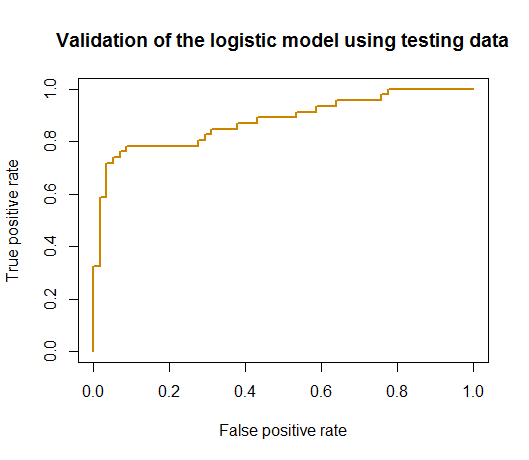

Remarks
The “law” of learning errors
We have seen the R-squared could be manipulated to become larger, i.e., by adding into the model with more variables even if these variables are not predictive. This bug is not a special trait of the linear regression model only. The R-squared by its definition is computed based on the training data, and therefore, is essentially a training error . For any model that offers a flexible degree of complexity (e.g., examples are shown in Table 19), its training error could be decreased if we make the model more complex.
Table 19: The complexity parameters of some models
| Model | Complexity parameter |
|---|---|
| Linear regression | Number of variables |
| Decision tree | Depth of tree |
| Random forest |
Figure 89: A much more complex decision tree model than the one in Figure 45; (left) the tree model perfectly fits the training data; (right) the tree performs poorly on the testing data

For example, let’s revisit the decision tree model shown in Figure 45 in Chapter 3. A deeper tree segments the space into smaller rectangular regions, guided by the distribution of the training data, as shown in Figure 89. The model achieves \(100\%\) accuracy—but this is an illusion, since the training data contains noise that could not be predicted. These rectangular regions, particularly those smaller ones, are susceptible to the noise. When we apply this deeper tree model on a testing data that is sampled from the same distribution of the training data131 The overall morphology of the two datasets looks alike; the differences, however, are due to the noise that is unpredictable., the model performs poorly.
It is generally true that the more complex a model gets, the lower the error on the training dataset becomes, as shown in Figure 90 (left). This is the “law” of the training error, and training a model based on the training error could easily “spoil” the model. If there is a testing dataset, the error curve would look like U-shaped, as shown in Figure 90 (middle), and the curve’s dip point helps us identify the best model complexity. While on the other hand, if there is no testing dataset, we could use cross-validation to obtain error estimates. The error curve obtained by cross-validation on the training data, as shown in Figure 90 (right), should provide a good approximation of the error curve of the testing data. The three figures in Figure 90, from left to right, illustrate a big picture of the laws of the errors and why some techniques such as the cross-validation have central importance in data analytics.

Figure 90: The law of learning errors
There are other approaches that play similar roles as the cross-validation, i.e., to approximate the error curve on unseen testing data. Examples include the Akaike information criterion (AIC), the Bayesian information criterion (BIC) , and many other model selection criteria alike. Different from the cross-validation, they don’t resample the training data. Rather, they are analytic approaches that evaluate a model’s performance by offsetting the model’s training error with a complexity penalty, i.e., the more complex a model gets, the larger the penalty imposed. Skipping their mathematical details, Figure 91 illustrates the basic idea of these approaches.

Figure 91: The basic idea of the AIC and BIC criteria
A larger view of model selection and validation
The practice of data analytics has evolved and developed an elaborate process to protect us from overfitting or underfitting a model. The 5-step process is illustrated in Figure 92.
Figure 92: A typical process of how data scientists work with clients to develop robust models

In the \(1^{st}\) step, the client collects two datasets, one is the training dataset and another is the testing dataset .
In the \(2^{nd}\) step, the client sends the training dataset to the data scientist to train the model. The client keeps the testing dataset for the client’s own use to test the final model submitted by the data scientist.
Now the data scientist should keep in mind that, no matter how the model is obtained132 In a real application, you may try all you could think of to find your best model. Deep understanding of your models always help. Sometimes it is also luck, insight, and hard-working trial and error. What matters is your model is really good and can outperform your competitor’s. Data scientists survive in a harsh competitive environment., its goal is to predict well on the unseen testing dataset. How shall we do so, without access to the testing dataset?
Just like in Bootstrap, we mimic the process.
In the \(3^{rd}\) step, the data scientist mimics the testing procedure as the client would use. The data scientist splits the training dataset into two parts, one for model training and one for model testing133 Generate a “training dataset” and a “testing dataset” from the training dataset. To avoid confusion, these two are often called internal training dataset and internal testing dataset , respectively. The training and testing datasets the client creates are often called external training dataset and external testing dataset , respectively..
In the \(4^{th}\) step, the data scientist creates a model that should fit the internal training dataset well. Cross-validation is often used in this step.
In the \(5^{th}\) step, the data scientist tests the model obtained in the \(4^{th}\) step using the internal testing data. This is the final pass that will be conducted in house, before the final model is submitted to the client. Note that, the \(5^{th}\) step could not be integrated into the model selection process conducted in the \(4^{th}\) step—otherwise, the internal testing data is essentially used as an internal training dataset134 After all, the usage of the dataset dictates its name..
In the \(6^{th}\) step, the data scientist submits the final model to the client. The model will be evaluated by the client on the internal testing dataset. The data scientist may or may not learn the evaluation result of the final model from the client.
The confusion matrix
The rare disease example mentioned earlier in this chapter implies that the context matters. It also implies that how we evaluate a model’s performance matters as well.
Accuracy, naturally, is a most important evaluation metric. As any overall evaluation metric, it averages things and blurs boundaries between categories, and for the same reason, it could be broken down into more subcategories. For example, a binary classification problem has two classes. We often care about specific accuracy on either class, i.e., if one class represents disease (positive) while another represents normal (negative), as a convention in medicine, we name the correct prediction on a positive case as true positive (TP) and name the correct prediction on a negative case as true negative (TN). Correspondingly, we define the false positive (FP) as incorrect prediction on a true negative case, and false negative (FN) as incorrect prediction on a true positive case. This is illustrated in Table 20, the so-called confusion matrix .
Table 20: The confusion matrix
| Reality: Positive | Reality: Negative | |
| Prediction: Positive | True positive (TP) | False positive (FP) |
| Prediction: Negative | False negative (FN) | True negative (TN) |
Based on TP, the concept true positive rate (TPR) could also be defined, i.e., TPR = TP/(TP+FN). Similarly, we can also define the false positive rate (FPR) as FPR = FP/(FP+TN).
The ROC curve
Building on the confusion matrix , the receiver operating characteristic curve (ROC curve) is an important evaluation metric for classification models.
Recall that, in a logistic regression model, before we make the final prediction, an intermediate result is obtained first
\[ p(\boldsymbol x)=\frac{1}{1+e^{-\left(\beta_{0}+\Sigma_{i=1}^{p} \beta_{i} x_{i}\right)}}. \]
A cut-off value135 By default, \(0.5\). is used to make the binary predictions, i.e., it classifies the cases whose \(p(\boldsymbol x)\) are larger than the cut-off value as positive; otherwise, if \(p(\boldsymbol x)\) is smaller than the cut-off value, negative. This means that, for each cut-off value, we can obtain a confusion matrix with different values of the TP, FP, FN, and TN. As there are many possible cut-off values, the ROC curve is a succinct way to synthesize all the scenarios of all possible cut-off values, i.e., it tries many cut-off values and plots the FPR (x-axis) against the TPR (y-axis). This is illustrated in Figure 93.
Figure 93: The logistic model produces an intermediate result \(p(\boldsymbol x)\) for the cases of both classes: (left) shows the distributions of \(p(\boldsymbol x)\) of both classes and a particular cut-off value; and (right) shows the ROC curve that synthesizes all the scenarios of all the cut-off values

The ROC curve is more useful to evaluate a model’s potential, i.e., Figure 93 presents the performances of the logistic regression model for all cut-off values rather than one cut-off value. The \(45^{\circ}\) line represents a model that is equivalent to random guess. In other words, the ROC curve of a model that lacks potential for prediction will be close to the \(45^{\circ}\) line. A better model will show a ROC curve that is closer to the upper left corner point. Because of this, the area under the curve (AUC) is often used to summarize the ROC curve of a model. The higher the AUC, the better the model.
A Small Data Example. Let’s study how a ROC curve could be created using an example. Consider a random forest model of \(100\) trees and its prediction on \(9\) data points. A random forest model uses the majority voting to aggregate the predictions of its trees to reach a final binary prediction. The cut-off value concerned here is the threshold of votes, i.e., here, we try three cut-off values, C=\(50\) (default in randomForest), C=\(37\), and C=\(33\), as shown in Table 21.
Table 21: Prediction on \(9\) data points via a random forest model of \(100\) trees, with different cut-off values of the vote threshold, C=\(50\) (default in ra ndomForest), C=\(37\), and C=\(33\)
| ID | Vote | True Label | C=\(50\) | C=\(37\) | C=\(33\) |
| \(1\) | \(38\) | \(1\) | \(0\) | \(1\) | \(1\) |
| \(2\) | \(49\) | \(1\) | \(0\) | \(1\) | \(1\) |
| \(3\) | \(48\) | \(0\) | \(0\) | \(1\) | \(1\) |
| \(4\) | \(76\) | \(1\) | \(1\) | \(1\) | \(1\) |
| \(5\) | \(32\) | \(0\) | \(0\) | \(0\) | \(0\) |
| \(6\) | \(57\) | \(0\) | \(1\) | \(1\) | \(1\) |
| \(7\) | \(36\) | \(1\) | \(0\) | \(0\) | \(1\) |
| \(8\) | \(36\) | \(0\) | \(0\) | \(0\) | \(1\) |
| \(9\) | \(35\) | \(0\) | \(0\) | \(0\) | \(1\) |
Based on the definition of the confusion matrix in Table 20, we calculate the metrics in Table 22.
Table 22: Metrics for predictions in Table 21
| C=\(50\) | C=\(37\) | C=\(33\) | |
|---|---|---|---|
| Accuracy | \(5/9\) | \(6/9\) | \(5/9\) |
| TP | \(1\) | \(3\) | \(4\) |
| FP | \(1\) | \(2\) | \(4\) |
| FN | \(3\) | \(1\) | \(0\) |
| TN | \(4\) | \(3\) | \(1\) |
| FPR = FP/(FP+TN) | \(1/(1+4)\) | \(2/(2+3)\) | \(4/(4+1)\) |
| TPR = TP/(TP+FN) | \(1/(1+3)\) | \(3/(3+1)\) | \(4/(4+0)\) |
With three cut-off values, we map the three points in Figure 94 by plotting the FPR (x-axis) against the TPR (y-axis). There are a few R packages to generate a ROC curve for a classification model. Figure 94 illustrates the basic idea implemented in these packages to draw a ROC curve: sample a few cut-off values and map a few points in the figure, then draw a smooth curve that connects the point.
 Figure 94: Illustration of how to draw a ROC curve using the data in Tables~21 and~22
Figure 94: Illustration of how to draw a ROC curve using the data in Tables~21 and~22
R Example.
We build a logistic regression model using the AD data as we have done in Chapter 3.
# ROC and more performance metrics of logistic regression model
# Load the AD dataset
library(RCurl)
url <- paste0("https://raw.githubusercontent.com",
"/analyticsbook/book/main/data/AD.csv")
AD <- read.csv(text=getURL(url))
str(AD)
# Split the data into training and testing sets
n = dim(AD)[1]
n.train <- floor(0.8 * n)
idx.train <- sample(n, n.train)
AD.train <- AD[idx.train,]
AD.test <- AD[-idx.train,]
# Automatic selection of the model
logit.AD.full <- glm(DX_bl ~ ., data = AD.train[,c(1:16)],
family = "binomial")
logit.AD.final <- step(logit.AD.full, direction="both", trace = 0)
summary(logit.AD.final)Then we use the function, confusionMatrix() from the R package caret to obtain the confusion matrix
require(e1071)
require(caret)
# Prediction scores
pred = predict(logit.AD.final, newdata=AD.test,type="response")
confusionMatrix(data=factor(pred>0.5), factor(AD.test[,1]==1))The result is shown below.
## Confusion Matrix and Statistics
##
## Reference
## Prediction FALSE TRUE
## FALSE 48 7
## TRUE 7 42
##
## Accuracy : 0.8654
## 95% CI : (0.7845, 0.9244)
## No Information Rate : 0.5288
## P-Value [Acc > NIR] : 3.201e-13
##
## Kappa : 0.7299
## Mcnemar's Test P-Value : 1
##
## Sensitivity : 0.8727
## Specificity : 0.8571
## Pos Pred Value : 0.8727
## Neg Pred Value : 0.8571
## Prevalence : 0.5288
## Detection Rate : 0.4615
## Detection Prevalence : 0.5288
## Balanced Accuracy : 0.8649
##
## 'Positive' Class : FALSE
## The ROC curve could be drawn using the R Package ROCR.
 Figure 95: ROC curve of the logistic regression model
# Generate the ROC curve using the testing data
# Compute ROC and Precision-Recall curves
require('ROCR')
linear.roc.curve <- performance(prediction(pred, AD.test[,1]),
measure='tpr', x.measure='fpr' )
plot(linear.roc.curve, lwd = 2, col = "orange3",
main = "Validation of the logistic model using testing data")The ROC curve is shown in Figure 95.